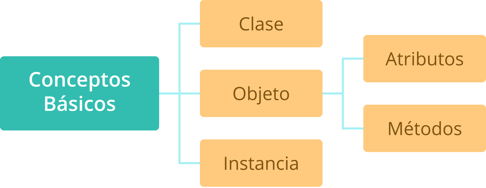
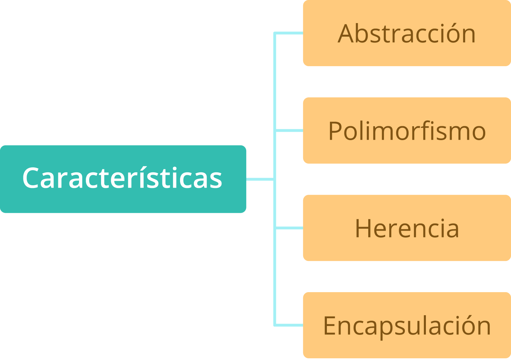
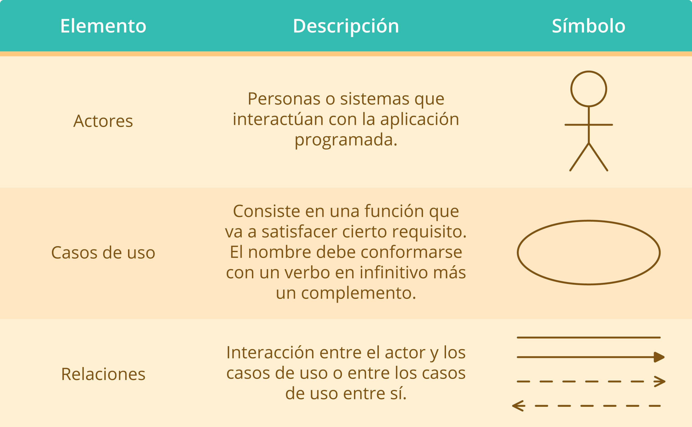
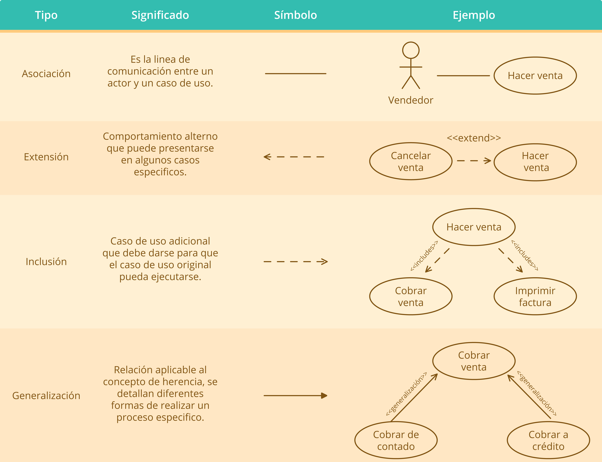
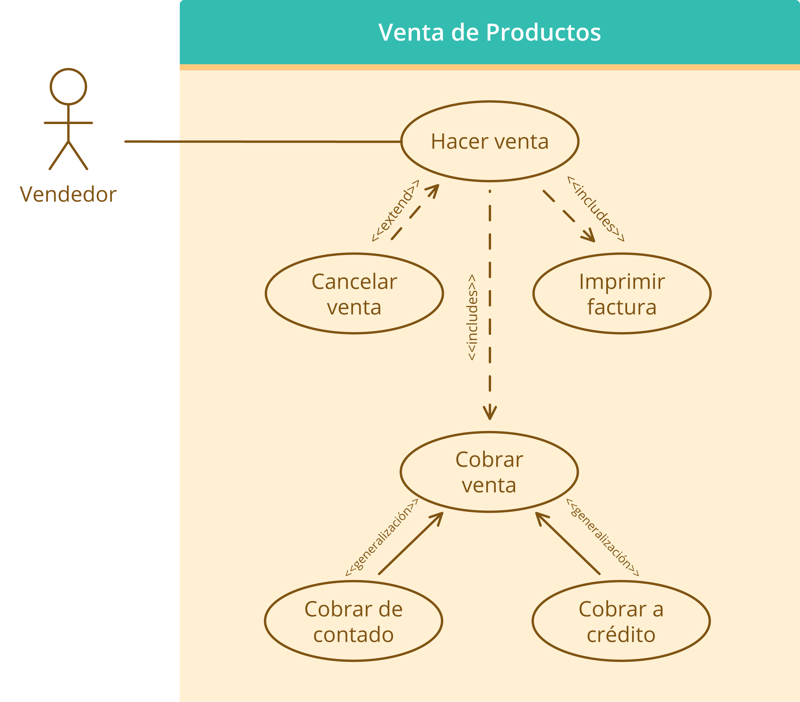
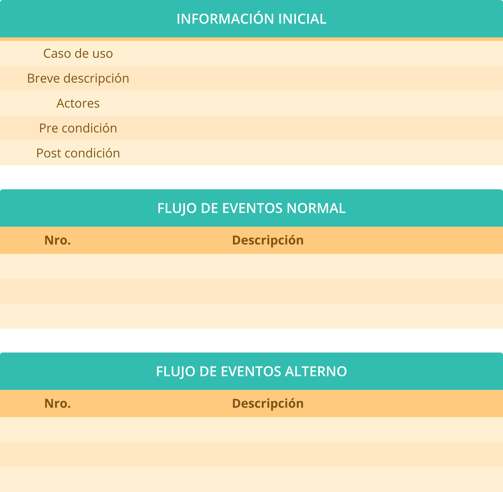

Introducción
El lenguaje de programación C++ es en realidad una mejora que se efectuó al lenguaje denominado C; como es de conocimiento común en programación, el operador “+” escrito dos veces “++” corresponde a un operador de incremento, lo cual permite inferir que el lenguaje procede de un “incremento” realizado al C, que fue mejorado y adaptado para trabajar bajo el paradigma orientado a objetos, entre otras mejoras efectuadas.
En este material de formación se abordan en términos generales los conceptos de la programación orientada a objetos, éste es un paradigma aplicable a varios lenguajes; es decir, los conceptos aquí tratados no corresponden de forma específica al lenguaje C++, sino que son de aplicabilidad compartida con cualquier lenguaje que funcione bajo este mismo paradigma.
Adicionalmente, en el material de formación de esta primera actividad de aprendizaje, se abordarán de manera general las temáticas relacionadas con el proceso de identificación de los requerimientos de una aplicación de software, los pasos básicos que permiten la identificación de éstos y el proceso mínimo requerido que le facilita a un programador empezar con el desarrollo de una solución informática.
1. Programación orientada a objetos
La programación orientada a objetos consiste básicamente en la forma en que se piensa para efectuar el proceso de escritura de las diferentes secuencias de código que componen un programa o desarrollo de software.
A lo largo del tiempo se había venido programando de forma secuencial y podría decirse, muy mecánica, sin tener un pensamiento un poco más realista que aporte diferentes beneficios a los códigos escritos; lo que se busca con el paradigma orientado a objetos es que los programas sean pensados de un modo que sus componentes puedan ser utilizados en diferentes soluciones, ya que muchas veces hay varias aplicaciones que comparten características entre sí y de este modo podría optimizarse tiempo y recursos en el ejercicio de la programación.
En el proceso de programar bajo el paradigma orientado a objetos, se trata de pensar cada componente de una aplicación como un elemento independiente; dichos elementos serían los denominados clases, que constituyen el esquema general de almacenamiento de la estructura básica de esos componentes, y cuando se realiza la definición específica de cada componente, éste se denomina objeto, que es el que contiene diferentes atributos, representados en las variables que almacenan información de cada objeto y diferentes procedimientos que los objetos pueden realizar dentro del sistema.
Una vez definida la clase donde se mencionan los diferentes métodos y atributos que la componen, basándose en ella, se comienza la creación de los objetos y este proceso es el que se conoce como instanciación de una clase, donde se usa el esquema definido para crear un objeto a partir de este.
Es importante tener en cuenta que la conceptualización y teorización sobre el paradigma orientado a objetos es una temática bastante amplia, sobre la cual se puede encontrar mucha información que profundiza en cada una de las definiciones propias de esta forma de programar; sin embargo, en este material de formación se aborda de un modo resumido para contextualizar al aprendiz respecto al tema, de manera que pueda dar inicio satisfactorio al proceso de formación en curso.
1.1 Conceptos básicos
Como se vio en la introducción, al hablar del paradigma orientado a objetos surgen cinco (5) conceptos específicos sobre los cuales es necesario tener claridad para que el proceso de programación sea satisfactorio. Estos conceptos pueden observarse en la siguiente figura.
Conceptos básicos de la programación orientada a objetos
Una clase consiste en una especie de plantilla donde se definen los atributos o características, los métodos o comportamientos que van a compartir cierto conjunto de elementos similares; con base en esto, en el paradigma de programación orientada a objetos pueden existir muchos elementos relacionados con la misma clase, que comparten métodos y atributos o tienen los suyos propios. Para ilustrarlo con un ejemplo, se puede pensar en la clase VEHÍCULO, donde es posible definir muchos vehículos que conservan atributos compartidos como por ejemplo modelo y marca y otros que sean diferentes como número de motor y de placa y así mismo pueden compartir métodos como avanzar, frenar, cambiar de velocidad, etc.
Consiste en el procedimiento efectuado cuando se crea un objeto a partir de una clase; es decir, cuando en el código del programa se diligencia la información según la plantilla establecida por la clase. Es importante tener en cuenta que dentro de un programa puede haber varias instancias de la misma clase; para continuar con el ejemplo de la clase VEHÍCULO, se supone que se tenga una instancia con un vehículo motor MC21 de marca Renault, otra instancia con un vehículo motor AB147 de marca Mazda y otra instancia de vehículo motor XA41B marca Daewoo; la clase para todos es igual y todos comparten los métodos avanzar, frenar y cambiar de velocidad, pero son instancias diferentes.
Para establecer claridad en el concepto, surge una analogía interesante que puede hacerlo más entendible, y se trata de que la clase se observe como una receta de cocina (ingredientes para hacer galletas, procedimiento para fabricarlas, tiempo de cocción, etc.) y la instancia como el producto terminado (galletas listas); es decir, la clase indica cómo debe definirse y la instancia es la definición en sí.
El objeto es cada uno de los elementos creados a partir de las clases; un objeto entonces pertenece a una clase y por tal razón dispone de las características y los comportamientos de esta, conocidos en el paradigma orientado a objetos como atributos y métodos.
Recordando nuevamente la analogía mencionada en el concepto de instancia, los objetos podrían ser galleta de mantequilla, galleta de chips, galleta integral y llevándolo al ejemplo de la clase VEHÍCULO podrían tenerse diferentes objetos tal como se ilustra en la siguiente figura, donde los cuatro objetos creados tienen diferentes atributos pero comparten los mismos métodos.
En el siguiente ejemplo se observa la creación de una clase, con sus atributos y métodos en C++; así como también la instanciación de la misma a través de la creación de dos objetos a partir de ella. Se recomienda digitar el código en un editor de texto para continuar con la práctica del lenguaje.

1.2 Características
Para que un lenguaje pueda estar incluido dentro del paradigma orientado a objetos, debe reunir las características que se observan en la siguiente figura.
Características del paradigma orientado a objetos
Es el proceso que se realiza para identificar los componentes y comportamientos de una clase, donde el objetivo principal es descartar lo que no es importante y asegurar que se tiene en cuenta lo esencial para que la clase pueda ser funcional.
En la programación, esta característica permite que el código sea más portable; es decir, que pueda reutilizarse con mayor facilidad. La clave para que la abstracción sea satisfactoria está en definir los datos y comportamientos comunes a un conjunto de elementos para crear con ellos cada clase.
Consiste en el proceso por medio del cual se crea una clase a partir de otra que ya existe. Este concepto puede entenderse de forma muy similar al concepto de herencia en un ámbito familiar, un padre hereda ciertas características a sus hijos, así mismo, la clase original o clase padre, también llamada súper clase, hereda a otras clases llamadas subclases o clases hijas, sus métodos y atributos.
Esta característica permite definir métodos y atributos nuevos en las clases hijas y aplicarlos a los que fueron heredados.
Particularmente algunos lenguajes, entre ellos el C++, permiten la implementación de la herencia múltiple, que significa que la clase hija hereda los atributos de dos clases padre, esto con el fin de reunir en una sola varios atributos existentes en diferentes clases.
En la siguiente ejemplo se observa la aplicación de la herencia en C++ a través de la creación de un programa con una superclase llamada Persona, que tiene una clase hija llamada Empleado. Se debe digitar el código en el Dev-C++ para continuar con la práctica del lenguaje.
Es el mecanismo que garantiza protección de la información contenida en una clase, puede verse como un sistema de permisos con el cual se configura qué o quiénes pueden acceder a determinados datos y de qué manera.
Dentro de este mecanismo se establecen tres niveles que son: privado, protegido y público, los cuales definen las restricciones de acceso a los métodos de la misma clase, a las funciones de la misma clase padre y la clase hijo y a los datos y métodos de todas las clases, respectivamente. En la siguiente figura se ilustra lo anterior.
Niveles de encapsulación
Finalmente, en el encapsulamiento lo que se obtiene es que quien utilice el objeto solo tenga relación con la interfaz, sin tener que entenderse con la forma en que esta fue implementada.
Se trata de la característica que tienen los objetos para reaccionar de forma diferente a un mismo mensaje; es decir, aunque se trate de la misma acción, cada objeto responde de acuerdo con los parámetros que hayan sido enviados al invocar la respectiva función.
Una de las cosas principales que se pretende con el polimorfismo es reducir el mantenimiento de las soluciones informáticas; para aplicarlo es importante tener en cuenta que los objetos cumplan con el requisito de saber responder al mensaje enviado.
El polimorfismo es un concepto de la programación orientada a objetos que está estrechamente relacionado con la herencia, ya que una clase padre hereda a sus clases hijas atributos y métodos, pero cada una de esas clases hijas realiza las acciones a su manera. Continuando con la ejemplificación a través de la clase VEHÍCULO, se puede suponer que dicha clase tiene un método llamado parquear() y que a través de la herencia se crean clases hijas llamadas carro, moto y camión, es el polimorfismo el que permite que únicamente sea necesario tener un método llamado parquear(), ya que al declararlo se le configura para que reciba como parámetro cualquier objeto de la clase VEHÍCULO.
En el siguiente ejemplo se observa la aplicación de herencia con polimorfismo en C++ a través de la creación de un programa con una superclase llamada Persona, que tiene dos clases hijas llamadas Empleado y Socio y que aplica polimorfismo que se hace evidente en el método ver(). Digitar el código en el Dev-C++ para continuar con la práctica del lenguaje.
2. Identificación de requerimientos
La identificación de requerimientos es el proceso mediante el cual el cliente y el equipo de desarrolladores analizan el sistema que se desea crear, con el fin de determinar con claridad lo que se espera obtener; esto con miras a que en el momento en que el software sea puesto en ejecución, presente la menor cantidad posible de problemas y proporcione el rendimiento y la eficiencia esperados por todos.
2.1 Tipos de Requerimientos
En general, los requerimientos para una solución informática pueden ser de dos tipos: funcionales y no funcionales.
Los requerimientos funcionales consisten en la descripción detallada de las funciones que el sistema debe cumplir. Es importante ser muy precisos en dicha descripción, ya que de una definición bien detallada y específica depende que este proceso sea satisfactorio y proporcione en realidad los resultados que se esperan.
Los requerimientos no funcionales son aquellos que no están relacionados de manera directa con las funciones que desarrollará el sistema sino con otras consideraciones que son importantes a la hora de implementarlo.
Entre estos requerimientos se pueden mencionar las necesidades específicas de hardware, la velocidad de respuesta, la capacidad de almacenamiento, las restricciones presupuestales, las políticas de privacidad y la interacción con otras soluciones informáticas existentes en la empresa, etc.
Los requerimientos no funcionales pueden verse agrupados de acuerdo con el mismo sistema, con las políticas de la compañía para la cual se desarrolla y con otros factores externos a estos.
2.2 Algunas técnicas
Existen diferentes formas que pueden ser utilizadas para efectuar el proceso de levantamiento de requerimientos cuando se va a iniciar la creación de una aplicación informática; la selección de la técnica a aplicar depende en la mayoría de casos de las preferencias del equipo desarrollador, lo que si debe tenerse muy en cuenta es la importancia de la participación del cliente y los usuarios finales en la aplicación de cualquiera que sea la técnica que se elija.
A continuación se observan algunas de las técnicas existentes para llevar a cabo el proceso en cuestión.
Esta técnica consiste en analizar la forma en que se realiza el proceso que desea ser sistematizado; como su nombre lo indica, el personal encargado del levantamiento de requisitos se dedica a observar y tomar nota de las acciones realizadas, intentando detallarlas lo mejor posible para no pasar por alto ningún elemento que pueda ser relevante para la solución informática que va a desarrollarse; cosas como datos que servirán de insumo al software para operar, las salidas que se generarán, la forma de interacción con otros sistemas y sus actores, y así, cualquier detalle que pueda intervenir en las distintas funciones que deben ser programadas.
A través de la técnica de observación, los clientes y usuarios finales del software pueden interactuar con el personal de desarrollo resolviendo y haciendo preguntas que van a ser de suma utilidad para que la aplicación finalmente cumpla con todo lo que se requiere, y de este modo no haya lugar a demasiados mantenimientos ni ajustes que tengan que realizarse posterior a su entrega.
Según Guerra (s.f.), profesor investigador de la Universidad Politécnica de San Luis Potosí, los escenarios “se utilizan para documentar el comportamiento del sistema cuando se le presentan eventos específicos. Cada evento de interacción distinto, o la selección de un servicio del sistema, se documentan como un escenario de eventos distinto. Los escenarios de eventos incluyen una descripción del flujo de datos y las acciones del sistema, y documenta las excepciones que puedan surgir” (Sin página).
De acuerdo con la definición anterior, en esta técnica se realizan una especie de suposiciones para analizar el comportamiento del sistema en diferentes situaciones y de este modo se va documentando el proceso para llegar al estado ideal deseado de la aplicación que se creará.
En su texto, el profesor Guerra también hace énfasis en que la técnica de escenarios es la que se utiliza como base para la aplicación de la técnica de casos de uso en la obtención de requerimientos; dicha técnica será estudiada en el siguiente apartado de este material de formación.
La técnica de casos de uso es una manera muy interesante de brindar al usuario final una clara perspectiva de lo que se realizará en el software solicitado, para que de esta forma él tenga la oportunidad de identificar si lo planteado se trata en realidad de lo que él requiere.
Partiendo de lo anterior, surge entonces el siguiente interrogante: ¿Cómo presentar algo que aún no está hecho? Para ello existen sistemas que permiten representar las funcionalidades de un software siguiendo ciertas instrucciones; entre esos sistemas, el más conocido es el UML (Unified Modeling Language) o Lenguaje Unificado de Modelado, que a través de múltiples componentes gráficos y diferentes tipos de diagramas, permite mostrar la manera en que el sistema va a comportarse.
Entre los diferentes diagramas que se realizan bajo el sistema UML está el diagrama de caso de uso, que proporciona la posibilidad de observar qué podrá hacer el sistema sin especificar cómo va a funcionar; es por ello que se utilizan en la etapa de levantamiento de requerimientos, dado que aquí lo que se busca finalmente es dejar clara cada una de las funciones que la aplicación debe realizar.
El diagrama de casos de uso está conformado por varios elementos, cada uno con su propio símbolo. La descripción de estos elementos se puede observar en la siguiente tabla 1.
Tabla 1. Componentes del diagrama de casos de uso
Las relaciones entre los diferentes elementos del diagrama de casos de uso pueden ser de tipos diferentes y se representan también con un símbolo específico. La descripción de estas se observa en la tabla 2.
Tabla 2. Tipos de relaciones y ejemplos
En el ejemplo visto en la tabla 2 para la relación de extensión, se puede determinar lo siguiente:
En el ejemplo visto en la tabla 2 para la relación de inclusión, se puede determinar lo siguiente:
En la siguiente figura se puede observar de forma completa el diagrama de casos de uso abordado en la tabla 2.
Diagrama de casos de uso "Venta de Productos"
Para complementar esta técnica de casos de uso, es necesario contar con un formato de especificación de los mismos donde se describa su comportamiento; en este aspecto no hay un estándar definido, el formato presentado depende de cada grupo de trabajo; sin embargo, es importante que en este pueda recogerse información básica como:
En la siguiente figura se observa un modelo de formato de especificación de casos de uso.
Modelo formato de especificación de casos de uso
Hasta este momento se ha visto, en términos generales y de un modo muy resumido, el proceso que debe llevarse a cabo en la aplicación de la técnica de casos de uso para la identificación de requerimientos del software; a continuación se realiza un ejemplo completo con el fin de que el tema pueda tener una mejor comprensión al ser aplicado en un caso específico.
Actividad didáctica
¡Pon a prueba tu conocimiento!
La siguiente actividad tiene como propósito validar los conocimientos relacionados con el tema Conceptos de programación orientada a objetos.
IniciarGlosario
Abstracción:proceso realizado con el fin de identificar lo esencial para que una clase sea funcional.
Asociación:línea de comunicación entre dos casos de uso.
Atributo:cada una de las características de un objeto.
Clase:plantilla donde se definen métodos y atributos.
Extensión:relación entre casos de uso que genera la ejecución de uno cuando en el otro se cumple cierta concisión.
Herencia:característica de la programación orientada a objetos que permite crear una clase a partir de otra.
Inclusión:relación entre casos de uno que implica la realización de uno para que pueda ejecutarse el otro.
Método:cada una de las funcionalidades o acciones que puede llevar a cabo un objeto.
Objeto:elemento creado a partir de una clase.
Paradigma:forma utilizada para ejecutar el proceso de programación de una aplicación.
UML:sigla en inglés de Unified Modeling Languageo Lenguaje Unificado de Modelado, en español.
Material complementario
| Autor, (año del documento o material), Nombre del documento o material. | Tipo de material ( Video, capítulo de libro, articulo, otro) | Enlace del Recurso o Archivo del documento o material |
|---|---|---|
| Herramienta para Implementar LEL y Escenarios | Descargar | |
| Técnicas efectivas para la toma de requerimientos | Descargar |
Referencias bibliográficas
Guerra, C. (Sin fecha). Obtención de requerimientos. Técnicas y estrategia. Recuperado de:https://sg.com.mx/revista/17/obtencion-requerimientos-tecnicas-y-estrategia
Joyanes, L. Sánchez, L. (2006). Programación en C++ un enfoque práctico. España: Mc Graw Hill.
Metodología Gestión de Requerimientos. (Sin fecha). Técnicas para identificar requisitos funcionales y no funcionales. Recuperado de:https://sites.google.com/site/metodologiareq/capitulo-ii/tecnicas-para-identificar-requisitos-funcionales-y-no-funcionales